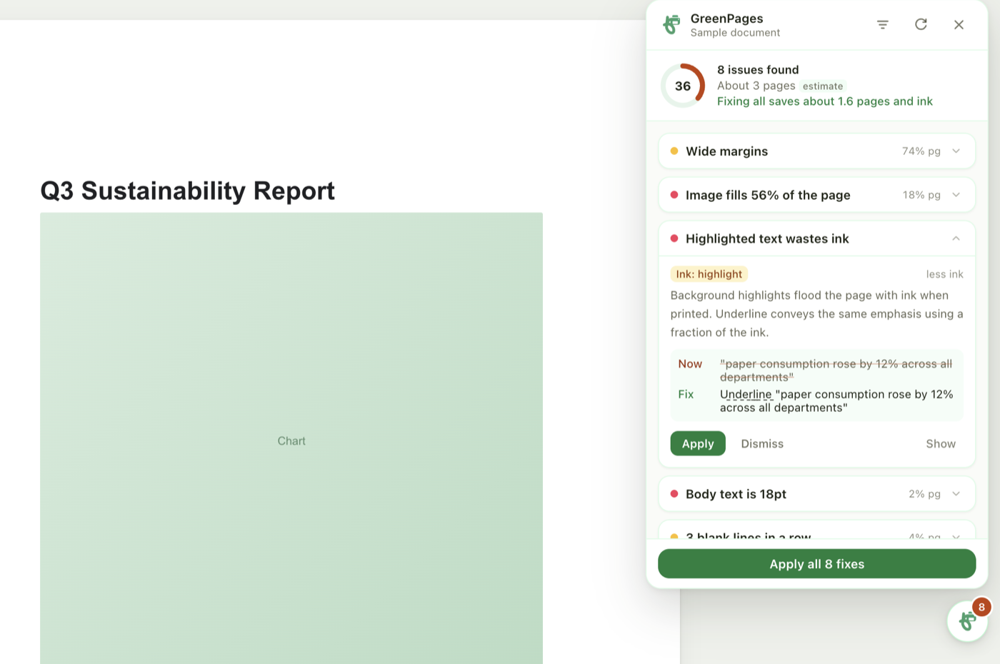

Print fewer pages from Google Docs.
Sparepage finds the formatting that wastes paper and ink, then fixes it in one click. It runs in your browser.
Free and open source. No account with us, no AI, no tracking.

What it catches
Each issue comes with the fix, how much paper it saves, and a button to apply it. You accept fixes one at a time or all at once.
- Highlighted textSwaps ink-heavy highlight fills for an underline.
- Oversized body textBrings 16pt and 18pt paragraphs back to body size.
- Wide marginsResets margins wider than the default, where it saves paper.
- Stacked blank linesCollapses runs of empty lines and trailing blank pages.
- Hard page breaksReplaces a half-empty page with a thin divider.
- Long lists of short bulletsTurns them into a compact table.
- Oversized imagesScales pictures that fill most of a page.
- Wordy paragraphsRewrites padded phrases, and shows every change it made.
How it works
-
Open a document
A small button appears in the corner of the editor with the number of issues found. Click it and connect to Google once.
-
Review the list
Every issue says what is wrong and what the fix saves. Show jumps to the spot in your document.
-
Apply, then print
Fix issues one by one or all together. Your document changes only when you click Apply, and Google keeps its version history.
How much paper could you save?
Fill in your own numbers. This is plain arithmetic, not a promise: Sparepage shows the real saving for each document in its panel.
One page saved per document is a modest starting point. A document with wide margins and large text often saves more.
Your document stays with you
Sparepage has no server. It reads the document you have open through Google's Docs API, checks it inside your browser, and writes back only the fixes you accept.
Wordy paragraphs are shortened by a library of plain-language rules, the way spell checkers worked before AI. Nothing is sent to an AI service.
- Google access
- Docs only, one permission
- Servers we run
- None
- Data we collect
- None
- AI services used
- None
- Price
- Free
A check before you print
Press Ctrl+P or Cmd+P in a document that still has issues and Sparepage shows the page count, what is left to fix, and a reminder to print double-sided. If the document is already clean, it stays out of your way and the normal print dialog opens.
Not using Google Docs?
The Word file tool fixes a .docx in your browser and gives you a corrected copy. The PDF check works with a PDF from any app and finds blank and ink-heavy pages. Neither one uploads your file.
Questions
Who can use it right now?
Google reviews any app that edits documents before it lets the public sign in. Until that review finishes, sign-in is limited to approved testers. The install page explains how to get added.
Does it change my document without asking?
No. It only reads your document until you click Apply or Apply all. Each change appears in Google's version history (File, then Version history), so you can restore an earlier copy.
Does it use AI?
No. Wordy paragraphs are shortened with a fixed library of plain-language replacements, and the panel lists every change so you can check it. Nothing is sent to an AI service.
Is the page count exact?
It uses Google's own PDF export, so it matches what prints. If that is not available for a document, Sparepage shows an estimate and labels it “estimate”.
Does it work with Word, Pages or other browsers?
The extension is for Google Docs in Chrome. For a Word .docx file, use the Word file tool. For anything else, save a PDF and use the PDF check. Both work in any modern browser.
How do I remove its access?
Open your Google account permissions, choose Sparepage, and remove access. Removing the extension from Chrome stops it running at all.